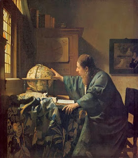

Yoma 28 - Abraham the philosopher and astrologer
Back to the order of Yom Kippur, the next that happened in the morning, the administrator would tell the assembled priests, "Go and see if the time for the slaughter of the morning offering has arrived." One of them would step outside, observe the sky and cry out "Dawn!" They would confirm, "As far as Hebron?" - and he would say "Yes." Why did they have to confirm? Because once they have mistaken the light of the moon for that the sun and slaughtered the morning sacrifice, but then had to take out to the burning place for invalid offerings.
The first Jew, Abraham, was very precise with timings, and his Afternoon prayer, Mincha, was exactly at midday. We, however, cannot know the times as precisely as Abraham did, because he was a master astronomer and astrologer. Moreover, he observed the whole Torah before it was given, having figured out what protective ordinances will the Sages later enact. From where do we know this? Because God says about Abraham that he "... obeyed My voice, and kept My charge, My commandments, My decrees, and My Torahs " - that is, the written Torah and the additional Torah laws established by the Sages. In fact, the tradition continued in the family, and Isaac and Jacob also learned Torah and taught it.
Art: Johannes Vermeer The Astronomer